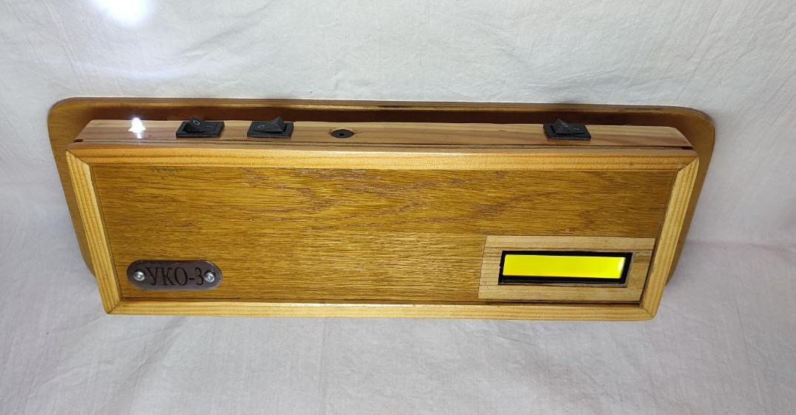

Проект был разработан в команде во время дистанционного обучения в Национальном детском технопарке. Моей частью проекта стало разработка, изготовление и установка специализированного захвата для коллаборативного робота. Захват позволяет поднимать и перемещать до 6 предметов одновременно, также захват имеет второе назначение - манипулирование заготовками коробок и складывание их в привычную форму. Для этого он имеет боковой упор, приводимый в движение пневматическим циллиндром. В стандартном положении боковой упор помещается в размер минимальной складываемой коробки, что позволяет манипулировать предметами на дне коробки не меняя захват.
Помимо разработки захвата были изучены методы программирования промышленных роботов
Проект был разработан в команде во время дистанционного обучения в Национальном детском технопарке. Моей частью проекта стало разработка и сборка туловища и головы робота; разработка, изготовление и подключение плат управления; создание базовой программы для тестировки движений и удалённого управления. Для сборки проекта были использованы платы esp32-s3 и esp32-cam, были разработаны и изготовлены платы управления и стабилизации напряжения, подключена камера и датчик расстояния. Создано ПО для контроля робота через веб-страницу, программа для управления приводами робота по протоколу UART, библиотека с набором базовых движений
Проект был разработан в рамках очного обучения в Национальном детском технопарке. Весь проект состоит из двух роботов. Первый передвигается по столовой, убирает пол и имеет площадку для подносов в верхней части. Робот имеет модульную архитектуру что позволяет подобрать конфигурацию под определённую столовую.
В центральной части робота (на уровне стола) есть пространство для установки второго робота. Второй робот служит для сбора остатков пищи и мойки столов. Роботы имеют интерфейсы взаимодействия друг с другом и с людьми.
На практике был собран полноразмерный прототип меньшего робота. Робот самостоятельно убирает каждый участок стола, не выходя за его границы, и возвращается на базу. Мойщик может сообщить сигналом о наличии посторонних предметов на пути
Этот сайт был разработан во время прохождения первой части курса по HTML/CSS, идея возникла в связи с необходимостью рекламы пасеки моего дедушки. При разработке сайта были использованы основные элементы HTML, дизайн страниц статичен и вручную дублирован на все страницы. Сайт стал отличным завершением курса, так как он подытожил все изученые элементы и придал мотивацию на дальнейшее изучение сферы веб-разработки

Версия прошлого проекта после тщательной модернизации. Переработанная конструкция крепления позволяет устанавливать устройство на гораздо большем количестве моделей стульев, вплоть до домашних. Устройство имеет приставку (как в первой версии проекта), но на этот раз беспроводную и выполненную в виде подставки под книгу. Переработана система контроля наклона: теперь устройство также чувствительно к наклону в сторону и имеет встроенное ПО для анализа статистики. Создана концепция сбора данных с нескольких устройств на компьютер для анализа школьного класса.
Для реализации проекта изучены платы семейства Arduino, среда Arduino IDE и необходимые дополнительные платы
Во время работы над первым проектом я заметил значительные недостатки: необходимость покупки и модернизации школьного стула, размер и вес устройства. Через некоторое время был разработан новый проект - устройство с аналогичным функционалом но с координально другим способом использования: установите УКО-2 на свой стул, нажмите кнопку включения и устройство готово к работе!
Устройство реагирует на наклон спины и, в случае нарушения осанки, сигнализирует об этом пользователю. В качестве дополнительных функций есть проводная приставка, размещаемая на столе для пользования устройством без звука, и стул отключается когда ученик встаёт.
За время создания проекта я изучил основы радиотехники и научился составлять научную документацию.
Проект выставлялся на различные научные конкурсы, занимал призовые места